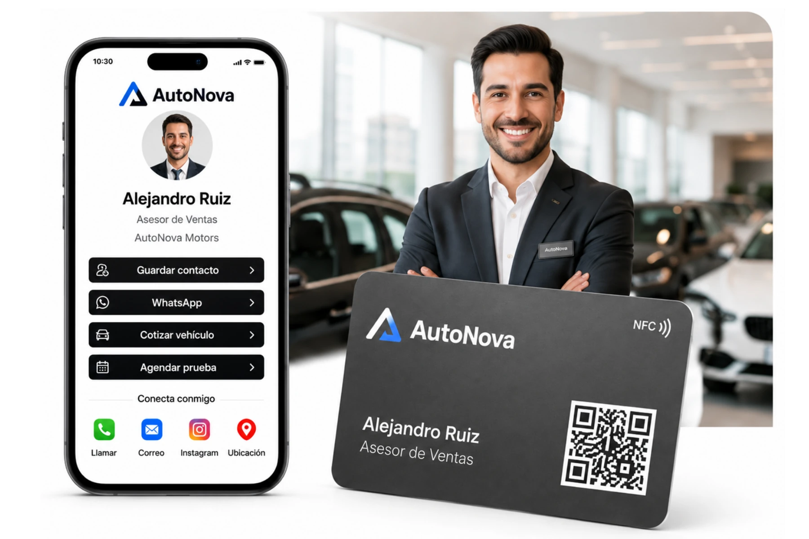
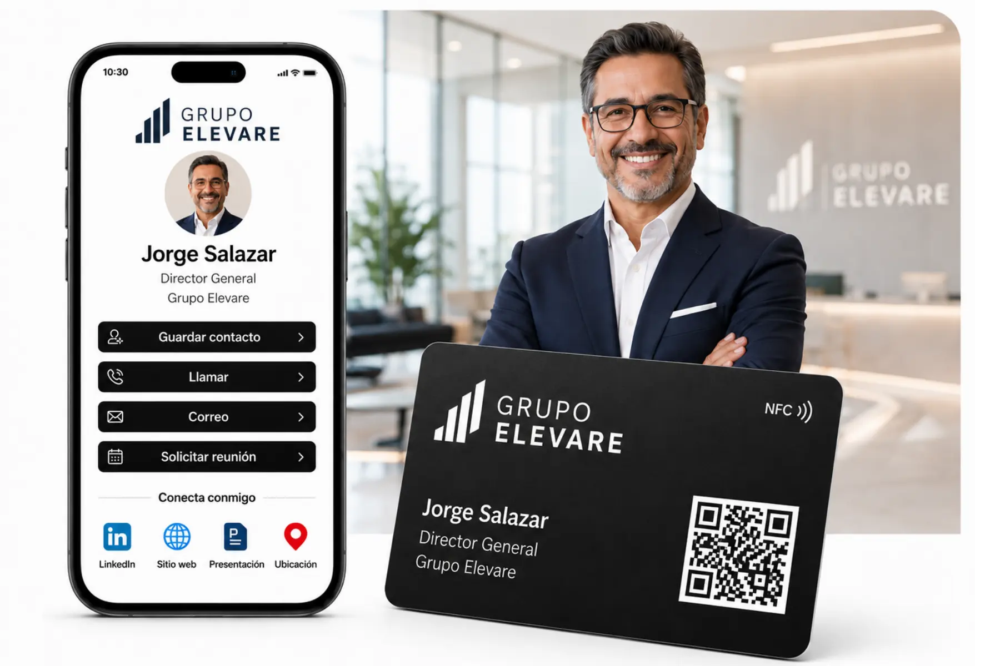
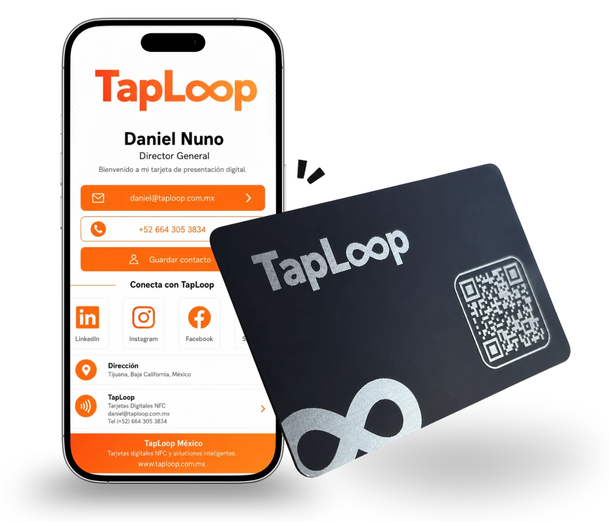

Experiencia y proyectos
Proyectos de tarjetas NFC y perfiles digitales para empresas
Diseñamos soluciones de presentación digital para profesionales, equipos comerciales, directivos y organizaciones que buscan compartir su contacto de forma más rápida y profesional.
Experiencia TapLoop
Soluciones creadas para conectar mejor
Cada proyecto combina diseño personalizado, tarjeta física, perfil digital, chip NFC y código QR.
Tipos de proyectos
Tarjetas de presentación digital NFC para distintos sectores
Adaptamos la tarjeta, el perfil digital y el proceso de implementación al tipo de equipo y a la experiencia que necesita ofrecer.
Equipos comerciales
Perfiles individuales para compartir contacto, WhatsApp, catálogo, presentación y enlaces de seguimiento.

Agencias automotrices
Cada asesor comparte sus datos, WhatsApp, inventario o promociones manteniendo la identidad de la agencia.

Directivos y empresas
Tarjetas PVC o metálicas para perfiles ejecutivos, reuniones corporativas, eventos y networking profesional.
Qué desarrollamos
Una solución completa, no solo una tarjeta
El proyecto puede incluir el diseño de la tarjeta física, un perfil digital personalizado, programación NFC, código QR, pruebas y producción.
- Diseño alineado con la identidad de la marca.
- Perfil digital con datos, redes y enlaces.
- Chip NFC programado y código QR vinculado.
- Verificación antes de la entrega.
Cómo trabajamos
Proceso claro desde el inicio
Recopilamos los requerimientos, presentamos propuestas visuales, realizamos ajustes y producimos únicamente después de la aprobación final.
- Definición de cantidad, material y objetivos.
- Recopilación de datos y elementos de marca.
- Diseño de tarjeta y perfil digital.
- Programación, pruebas, producción y envío.
Preguntas frecuentes
Experiencia y proyectos TapLoop
Información sobre el tipo de proyectos, personalización y alcance de nuestras soluciones.
¿Qué tipo de proyectos realiza TapLoop? +
TapLoop desarrolla tarjetas de presentación digital NFC, perfiles digitales personalizados y soluciones corporativas para profesionales, equipos comerciales, directivos, eventos y empresas.
¿Pueden trabajar con la identidad visual de una empresa? +
Sí. Cada proyecto se diseña con el logo, colores, estilo y requerimientos de la marca, evitando plantillas genéricas.
¿Cada colaborador puede tener un perfil diferente? +
Sí. Podemos mantener una línea visual corporativa y personalizar nombre, puesto, datos y enlaces para cada integrante.
¿Las tarjetas se prueban antes de enviarse? +
Sí. Verificamos el funcionamiento del NFC, el código QR, los enlaces y el perfil digital antes de la entrega.
¿Trabajan proyectos en todo México? +
Sí. TapLoop atiende proyectos para profesionales y empresas en México y realiza envíos de tarjetas terminadas.

Cuéntanos sobre tu próximo proyecto NFC
Indícanos cuántas tarjetas necesitas, el tipo de usuario y el resultado que buscas. Prepararemos una propuesta personalizada.
Diseño original
Perfil digital
Soluciones para equipos